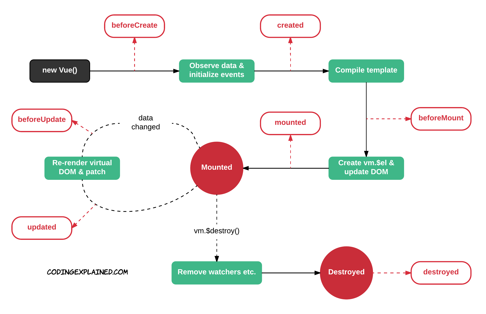

Úvod do Vue.JS

Historie
- Vznik v roce 2013
- První release v únoru 2014 (v0.6)
- v1.0.0 v roce 2015
- Poslední release v2.6.11 v prosinci 2019
Popularita
GitHub starsWeb Frameworks Benchmark
Round 7
www.stefankrause.netSwap Rows
Výměna 2 řádků na tabulce s 1K řádků (s 5ti warmup iteracemi).
Partial Update
Čas na update textu pro každý 10tý řádek (s 5ti warmup iteracemi) v tabulce s 10k řádků.
Remove Row
Čas na odstranění řádku (s 5ti warmup iteracemi).
Select Row
Doba na highlight řádku v po kliku na řádek (s 5ti warmup iteracemi).
Append Rows To Large Table
Doba na přidání 1000 řádků v tabulce s 10K řádky.
Create Rows
Vytvoření 1000 řádků po načtení stránky.
Výměna všech řádků
Doba updatu všech 1000 řádků tabulky (s 5ti warmup iteracemi).
Vytvoření mnoha řádků
Duration to create 10,000 rows
Clear Rows
Duration to clear the table filled with 10.000 rows.
Startup Time
Time for loading, parsing and starting up
Memory allocation in MBs
Ready Memory
Memory usage after page load
Run Memory
Memory usage after adding 1000 rows
Update Eatch 10th Row for 1k Rows (5 cycles)
Memory usage after clicking update every 10th row 5 times
Replace 1k Rows (5 cycles)
Memory usage after clicking create 1000 rows 5 times
Creating/Clearing 1k rows (5 cycles)
Memory usage after creating and clearing 1000 rows 5 times
Výhody
- Malá velikost
- Jednoduchý na pochopení i vývoj
- Snadná integrace i do existujících aplikací
- Výborná a detailní dokumentace
- Flexibilita
- Volnost volby
- Ale přitom přehledný ekosystém
Další informace
- Progresivní framework
- Založený na komponentách
- Inspirace staršími frameworky, to nejlepší z Angularu i Reactu
Opravdu malá velikost
jsize (react + react-dom)/angular/vue/jquery
| Framework | Velikost |
|---|---|
| React + react-dom | 34.4 kB (gzipped) |
| Angular | 62.2 kB (gzipped) |
| Vue.js | 23.8 kB (gzipped) |
| jquery | 31.1 kB (gzipped) |
Jednoduchý na pochopení
<template>
<div class="example">{{ msg }}</div>
</template>
<script>
export default {
data () {
return {
msg: 'Hello world!'
}
}
}
</script>
Snadná integrace
- Bezproblémová koexistence několika Vue.js aplikací na jedné stránce
- Vložení Vue.js runtime přes
<script> - Nebo přes webpack
- příp. web components, browserify, require.js, ...
Výborná dokumentace
Flexibilita
- Template lze napsat v samostatném HTML souroru
- nebo jako string v JavaScriptovém souboru
- nebo pomocí JSX jako v Reactu
- nebo pomocí čistého Javascriptu za využití virtual nodů (
renderfunkce)
Zjednodušuje přechod na Vue, protože vývojáři zvyklí na React/Angular mohou nadále používat to, na co jsou zvyklí.
Volnost volby
-
Template
- normální html
- jsx
- jade
-
Definice komponent
- es5
- es6 / es7
- es6 + flow
- TypeScript
Přehledný ekosystém
Základní pluginy vyvíjí core team.
- State management (
vuex) - Routing (
vue-router) - Scaffolding (
vue-cli)
Ekosystém
| Projekt | Co dělá? |
|---|---|
| vue-router | SPA routing |
| vuex | State management |
| vue-cli | Scaffolding |
| vue-loader | Single File Component (*.vue) loader pro webpack |
| vue-server-renderer | Server-side rendering |
| vue-class-component | TypeScript dekorátor pro definici komponent |
| vue-rx | RxJS integrace |
| vue-devtools | Browser DevTools extension |
Server-side Rendering (SSR)
Kdo to používá?
- GitLab
- NativeScript
- Weex
- Baidu
Jak Vue.js funguje?

Komponenty

Životní cyklus
Reaktivita

Interpolace
Text
<span>Message: {{ msg }}</span>
<span v-once>This will never change: {{ msg }}</span>
Raw HTML
<p>Using mustaches: {{ rawHtml }}</p>
<p>Using v-html directive: <span v-html="rawHtml"></span></p>
Atributy
<div v-bind:id="dynamicId"></div>
<button v-bind:disabled="isButtonDisabled">Button</button>
JavaScriptové výrazy
{{ number + 1 }}
{{ ok ? 'YES' : 'NO' }}
{{ message.split('').reverse().join('') }}
<div v-bind:id="'list-' + id"></div>
Direktivy
v-bind
Binding HTML atributů
<!-- plná syntaxe -->
<a v-bind:href="url"></a>
<!-- zkratka -->
<a :href="url"></a>
v-on
Binding DOM eventů
<!-- plná syntaxe -->
<a v-on:click="doMethod"></a>
<!-- zkratka -->
<a @click="doMethod"></a>
Modifikátory
<form @submit.prevent="onSubmit"> ... </form>
Vypočítané properties a watchery
Watch
Podobně jako v Angularu, při změně proměnné zavolá funkci, která může udělat cokoli.
var vm = new Vue({
el: '#demo',
data: {
firstName: 'Foo',
lastName: 'Bar',
fullName: 'Foo Bar'
},
watch: {
firstName: function (val) {
this.fullName = val + ' ' + this.lastName
},
lastName: function (val) {
this.fullName = this.firstName + ' ' + val
}
}
})
Vypočítanné proměnné
Deklarace proměnné na základě její závislosti na jiných proměnných, automatická reaktivita.
<div id="demo">{{ fullName }}</div>
var vm = new Vue({
el: '#demo',
data: {
firstName: 'Foo',
lastName: 'Bar'
},
computed: {
fullName: function () {
return this.firstName + ' ' + this.lastName
}
}
})
Settery vypočítaných proměnných
Vypočítaná proměnná může mít i setter, který se zavolá, když do ni někdo zkusí něco přiřadit.
//...
computed: {
fullName: {
// getter
get: function () {
return this.firstName + ' ' + this.lastName
},
// setter
set: function (newValue) {
var names = newValue.split(' ')
this.firstName = names[0]
this.lastName = names[names.length - 1]
}
}
}
//...
Bindingy pro class
<!-- <div class="active"></div> -->
<div :class="{
'active': isActive,
'text-danger': hasError
}">
</div>
<!-- <div class="default a-class-name"></div> -->
<div :class="['default', arbitrary]">
</div>
//...
data: {
isActive: true,
hasError: false,
arbitrary: 'a-class-name'
}
Podmíněný rendering
<div v-if="type === 'A'">A</div>
<div v-else-if="type === 'B'">B</div>
<div v-else-if="type === 'C'">C</div>
<div v-else>Not A/B/C</div>
Cykly
<ul id="example-1">
<!-- Použít :key se doporučuje pro lepší výkon. -->
<li v-for="item in items" :key="item.message">{{ item.message }}</li>
</ul>
var example1 = new Vue({
el: '#example-1',
data: {
items: [
{ message: 'Foo' },
{ message: 'Bar' }
]
}
})
Event handlery
<div id="example-2">
<button @click="greet">Greet</button>
</div>
var example2 = new Vue({
el: '#example-2',
data: {
name: 'Vue.js'
},
methods: {
greet(event) {
// `this` ukazuje na instanci Vue komponenty
}
}
})
Binding pro inputy formulářů
v-model umožňuje obousměrný binding známý z Angularu
<input v-model="message" placeholder="edit me">
<p>Message is: {{ message }}</p>
Modifikátory kláves
<!-- propagace click eventu se zastaví automaticky -->
<a @click.stop="oThis"></a>
<!-- submit event nezpůsobí reload stránky -->
<form @submit.prevent="onSubmit"></form>
<!-- modifikátory lze řetězit -->
<a @click.stop.prevent="doThat"></a>
<!-- k dispozici je mnoho dalších modifikátorů: .tab, .delete, .esc, .space, ... -->
<input @keyup.enter="submit">
Struktura komponenty
export default {
name: 'RangeSlider', // název
mixins: [], // mixiny umožňují sdílet funkcionalitu
extends: {}, // kompozice nových komponent
props: {}, // vstupní proměnné, lze definovat i typovou kontrolu
data() {}, // lokální proměnné komponenty
computed: {}, // reaktivní vypočítané proměnné
components: {}, // registrace child komponent, které tato komponenta také využívá
watch: {}, // definice watcherů
methods: {}, // deffinice metod
// lifecycle hooky
beforeCreate() {}, // před vytvořením komponenty
created() {}, // po tom co je komponenta vytvořena
beforeMount() {}, // před připojením komponenty na DOM element
mounted() {}, // po připojení na DOM element
beforeUpdate() {}, // před aktualizací datového modelu
updated() {}, // po aktualizaci datového modelu
activated() {}, // advanced stuff
deactivated() {}, // advanced stuff
beforeDestroy() {}, // před odstraněním komponenty z DOMu
destroyed() {}, // po odstranění komponenty z DOMu
errorCaptured() {},
serverPrefetch() {}, // pro načtení async dat při SSR
};
Další věci ...
https://vuejs.org/v2/guide/Vuex?
State Management Pattern?
Inspirace Reduxem známým z Reactu